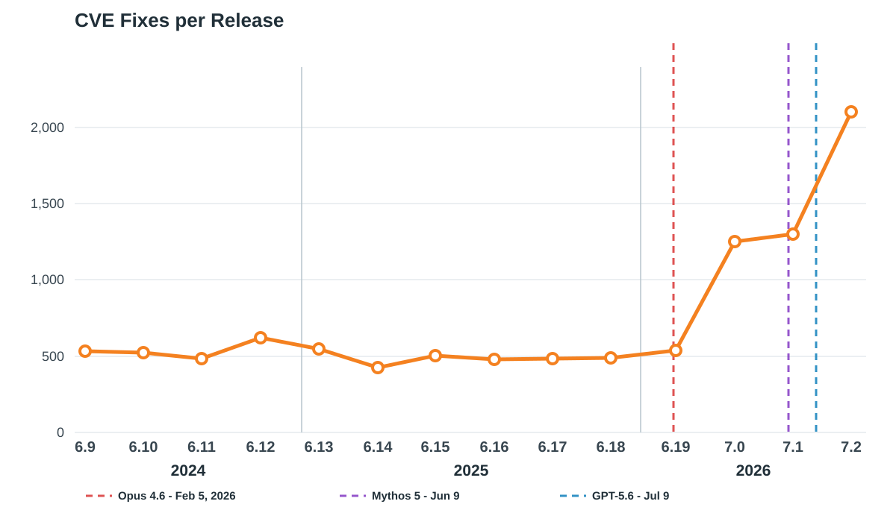
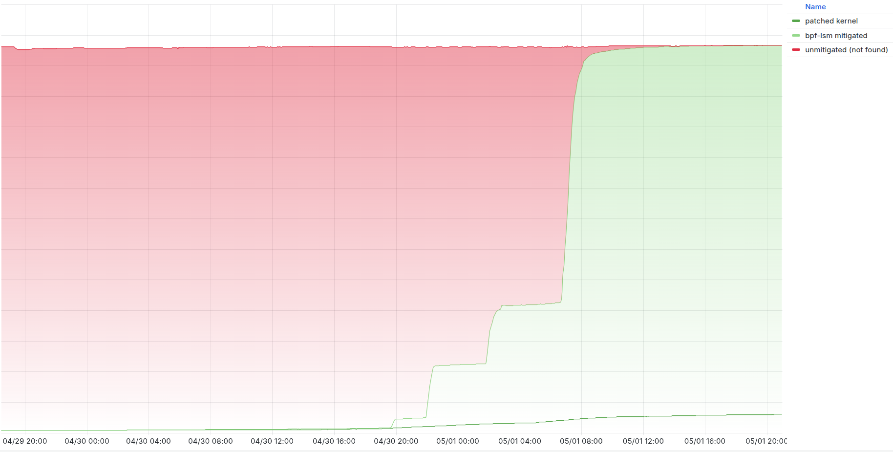
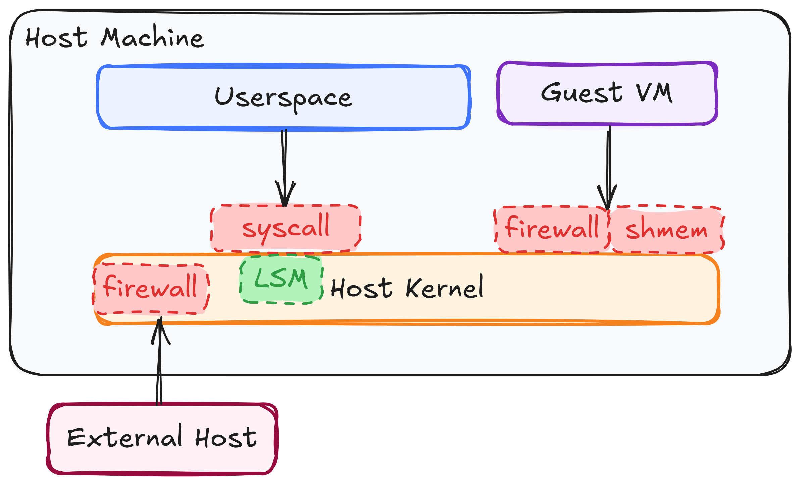
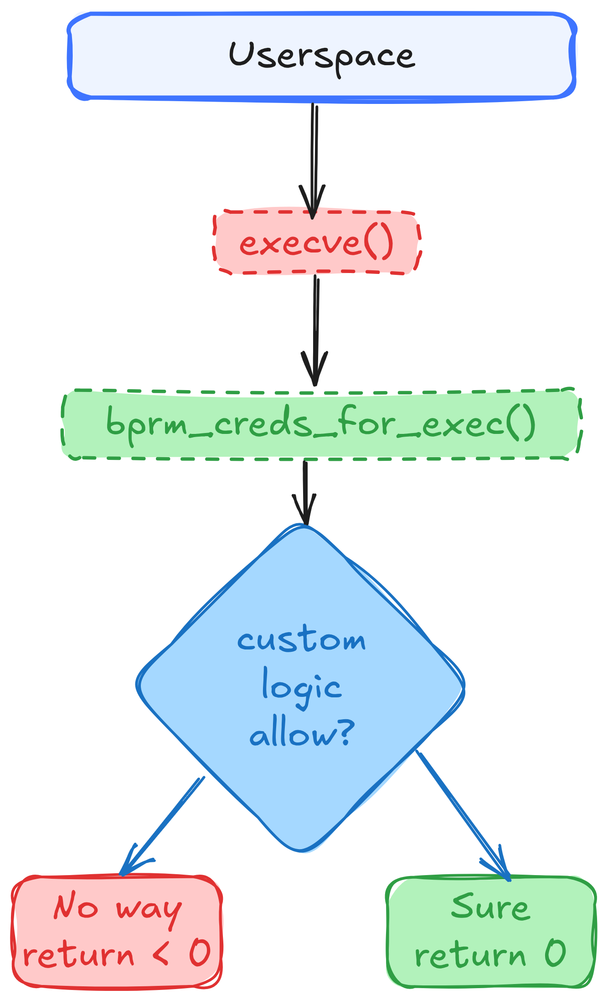
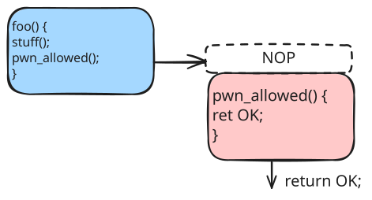
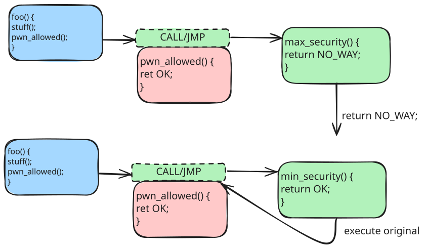
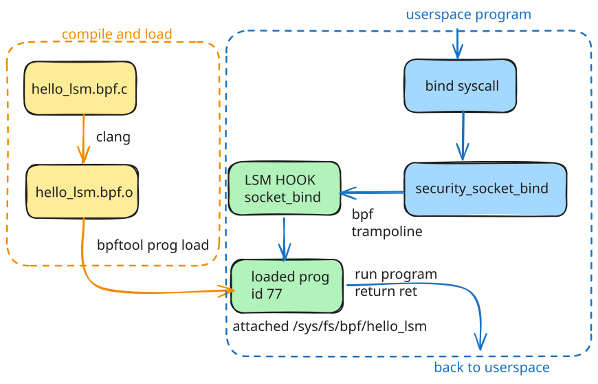
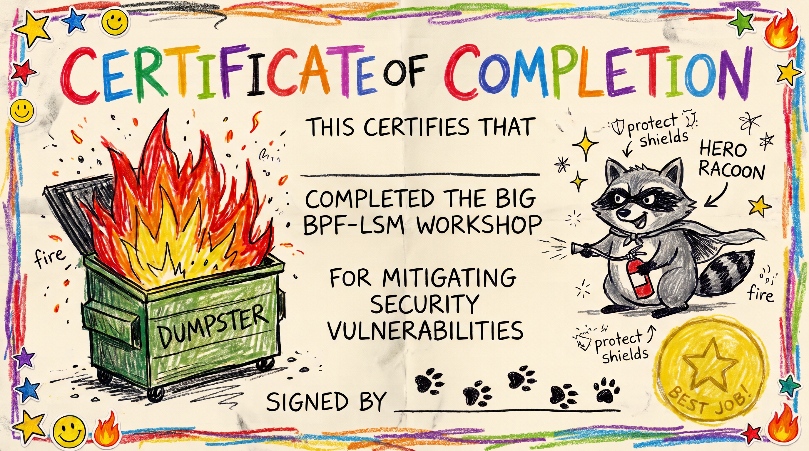

Previous slide Next slide Toggle fullscreen Toggle overview view Open presenter view
Mitigating All The Vulns with BPF-LSM: A Tutorial
Chris Arges carges@cloudflare.com
Texas Linux Festival 2026
prepare your workspace inside the VM
cd ~/bpf-lsm-workshop
make -C labs/tools
mkdir -p labs/work && cd $_
ideally you can work interactively in work
you can use labs/0* as checkpoints if you need to catch up
Texas Linux Festival 2026
Introduction
Who Chris Arges, Principal Systems Engineer, Cloudflare, Linux TeamWorked with Linux systems for over 20 years
Contributed to Linux Kernel, Ubuntu, Debian, and more
Interested in Linux, Security
Texas Linux Festival 2026
Cloudflare and our network
Linux across 335+ cities , multiple datacenters, many servers
Build our own latest longterm stable kernels; use Debian
Continually update to the latest patch, update to next LTS every year
Releases are done continuously, gradually, and slowly, many versions running at once

Source: cloudflare.com/network
Texas Linux Festival 2026
why learn about this
Texas Linux Festival 2026
Linux Vulnerabilities
LPE - Local Privilege Escalation
RCE - Remote Code Execution
Disclosure / Information Leak
Container/Guest Escape
DoS - Denial of Service
Not getting pwned
Texas Linux Festival 2026
Hockey Stick Growth

Security in the LLM age Kernel.org became a CVE Numbering Authority Feb 2024 (around 6.8)
Volume of CVEs has gone up
Mean Time to Exploit: Negative 7 Days
Texas Linux Festival 2026
Mitigation strategies
Update kernel and reboot - Slow, can fix anything, if a patch exists.Disable module or feature - Fast, only works if disabling is possible.Firewalls - Fast, if you can filter for malicious packets.Kernel livepatch - Fast, needs patch infrastructure, complex challenges.LSMs - Fast, if exploit can be blocked via LSM hook and/or expressed via policy.
Texas Linux Festival 2026
Copy Fail (CVE-2026-31431)

Mar 31, 08:11 UTC - fix merged upstream.
Apr 11–12 - fix shipped in 6.18.22, 6.19.12, and Linux 7.0.
Apr 29, 16:00 UTC - exploit publicly disclosed.
Apr 30, 09:33–09:51 UTC - fix shipped for other LTS kernels including 6.12.85.
May 1, 12:00 UTC - BPF LSM fully mitigated the fleet.
Read more: Copy Fail Blogpost
Texas Linux Festival 2026
Needs a Cool Name (CVE-2026-98432)
use-after-free caused by a race condition during TCP handshaking
bpf-lsm mitigated this one too
lab will focus on copy-fail
Texas Linux Festival 2026
some background
Texas Linux Festival 2026
Stopping Bad Things From Happening

Texas Linux Festival 2026

An LSM hook is a callback point in a security-sensitive kernel operation
Hooks get useful pointers to structures: credentials, inodes, files, tasks, etc.
LSM callbacks can be registered to perform custom checks, return 0 if ok or <0 if bad.
LSM callbacks can be stacked, exist in many places and can be inserted into a running kernel.
Texas Linux Festival 2026
LSM Hooks vs Syscalls
one syscall may cross several hooks
several syscalls may converge on one hook
kernel-internal callers can reach hooks without a userspace syscall
Syscall
LSM hooks
openat, read, writeinode_permission, file_open, file_permission
execvebprm_creds_for_exec, bprm_check_security
socket, bind, connectsocket_create, socket_bind, socket_connect
mount, umount, move_mountsb_mount, sb_umount, move_mount
clone3(CLONE_NEWUSER), unshareuserns_create
kill, pidfd_send_signaltask_kill
Texas Linux Festival 2026

Texas Linux Festival 2026
Function Patching

Texas Linux Festival 2026
clang compiles and makes BPF bytecode, BTF type data, maps, relocation records
bpf syscall loads, the in-kernel verifier checks itebpf bytecode is just-in-time JIT compiled into native machine code
BPF_PROG_LOAD loads the programBPF_LINK_CREATE links it to LSM trampolinebpftool does both for you
Texas Linux Festival 2026
Part 3
let's learn the hard way
Texas Linux Festival 2026
confirm the VM and workspace
uname -r
cat /sys/kernel/security/lsm
bpftool version
Texas Linux Festival 2026
type checkpoint 01: hello LSM
vim hello_lsm.bpf.c
#include "vmlinux.h"
#include <bpf/bpf_helpers.h>
#include <bpf/bpf_tracing.h>
char LICENSE[] SEC("license" ) = "Dual MIT/GPL" ;
SEC("lsm/socket_bind" )
int BPF_PROG (hello_lsm, struct socket *sock, struct sockaddr *address, int addrlen, int ret)
{
bpf_printk("hello from the socket_bind LSM hook" );
return ret;
}
SEC selects the hook; BPF_PROG provides its typed arguments.ret carries the previous BPF program's result; preserve a denial.more hooks
Texas Linux Festival 2026
try to compile
$ clang -O2 -g -target bpf -D__TARGET_ARCH_x86 -I. -c hello_lsm.bpf.c -o hello_lsm.bpf.o
hello_lsm.bpf.c:1:10: fatal error: 'vmlinux.h' file not found
1 |
| ^~~~~~~~~~~
1 error generated.
oh yeah, we need vmlinux.h
Texas Linux Festival 2026
generate vmlinux.h and compile
$ bpftool btf dump file /sys/kernel/btf/vmlinux format c > ../vmlinux.h
$ clang \
-O2 -g -Wall -Werror \
-fms-extensions -Wno-microsoft-anon-tag \
-target bpf -D__TARGET_ARCH_x86 \
-I.. -c hello_lsm.bpf.c -o hello_lsm.bpf.o
../vmlinux.h will be shared so place it one level aboveOn arm64, use -D__TARGET_ARCH_arm64.
We add a few extra flags to get rid of warnings in vmlinux.h
Re-run compile using clang
OK, now that we have a compiled BPF program, let's look inside.
Texas Linux Festival 2026
look, an ELF!
$ llvm-readelf -S hello_lsm.bpf.o | head -n10
There are 27 section headers, starting at offset 0xd2b48:
Section Headers:
[Nr] Name Type Address Off Size ES Flg Lk Inf Al
[ 0] NULL 0000000000000000 000000 000000 00 0 0 0
[ 1] .strtab STRTAB 0000000000000000 0d2a1b 000128 00 0 0 1
[ 2] .text PROGBITS 0000000000000000 000040 000000 00 AX 0 0 4
[ 3] lsm/socket_bind PROGBITS 0000000000000000 000040 000038 00 AX 0 0 8
[ 4] .rellsm/socket_bind REL 0000000000000000 093638 000010 10 I 26 3 8
[ 5] license PROGBITS 0000000000000000 000078 00000d 00 WA 0 0 1
We can see that there is a section for lsm/socket_bind.
PROGBITS == machine code, AX needs allocation and executable
Texas Linux Festival 2026
dump the code
$ llvm-objdump -dr --section='lsm/socket_bind' ./hello_lsm.bpf.o
./hello_lsm.bpf.o: file format elf64-bpf
Disassembly of section lsm/socket_bind:
0000000000000000 <hello_lsm>:
0: 79 16 18 00 00 00 00 00 r6 = *(u64 *)(r1 + 0x18)
1: 18 01 00 00 00 00 00 00 00 00 00 00 00 00 00 00 r1 = 0x0 ll
0000000000000008: R_BPF_64_64 .rodata
3: b7 02 00 00 24 00 00 00 r2 = 0x24
4: 85 00 00 00 06 00 00 00 call 0x6
5: bf 60 00 00 00 00 00 00 r0 = r6
6: 95 00 00 00 00 00 00 00 exit
Texas Linux Festival 2026
load the program
$ sudo bpftool prog load ./hello_lsm.bpf.o /sys/fs/bpf/hello_lsm type lsm
$ sudo bpftool prog show pinned /sys/fs/bpf/hello_lsm
52: lsm name hello_lsm tag 328fe68e244c29a9 gpl
loaded_at 2026-10-30T22:45:35+0000 uid 0
xlated 56B jited 52B memlock 4096B map_ids 20
btf_id 107
we aren't actually linked to the hook yet
Texas Linux Festival 2026
unload then load and attach the program
$ sudo rm /sys/fs/bpf/hello_lsm
$ sudo bpftool prog load hello_lsm.bpf.o /sys/fs/bpf/hello_lsm autoattach
$ sudo bpftool link show pinned /sys/fs/bpf/hello_lsm
5: tracing prog 77
prog_type lsm attach_type lsm_mac
target_obj_id 1 target_btf_id 69975
remember your prog number!
bpftool did both load and link, and the kernel verified this program too
Texas Linux Festival 2026
dump translated eBPF
$ sudo bpftool prog dump xlated id 77 opcodes
0: (79) r6 = *(u64 *)(r1 +24)
79 16 18 00 00 00 00 00
1: (18) r1 = map[id:20][0]+0
18 21 00 00 14 00 00 00 00 00 00 00 00 00 00 00
3: (b7) r2 = 36
b7 02 00 00 24 00 00 00
4: (85) call bpf_trace_printk#-119072
85 00 00 00 e0 2e fe ff
5: (bf) r0 = r6
bf 60 00 00 00 00 00 00
6: (95) exit
95 00 00 00 00 00 00 00
something got added, can you tell?
Texas Linux Festival 2026
dump JIT-compiled x86-64
$ sudo bpftool prog dump jited id 77 opcodes
bpf_prog_328fe68e244c29a9_hello_lsm:
15: mov 0x18(%rdi),%rbx # preserve ret
48 8b 5f 18
19: movabs $0xffff8efd87259f30,%rdi # format string
48 bf 30 9f 25 87 fd 8e ff ff
23: mov $0x24,%esi # string length
be 24 00 00 00
28: call 0xfffffffff49c88b8 # bpf_trace_printk
e8 8b 88 9c f4
2d: mov %rbx,%rax # return ret
48 89 d8
32: ret
c3
same thing just x86, JIT is faster
Texas Linux Festival 2026
trace and trigger the hook
Terminal 1:
$ sudo bpftool prog tracelog
$ sudo cat /sys/kernel/tracing/trace_pipe
Terminal 2:
$ ../tools/try-bind inet
bind (AF_INET): OK
$ nc -nvlp 9999
Trace:
try-bind-1177 [000] ...11 59911.003684: bpf_trace_printk: hello from the socket_bind LSM hook
Texas Linux Festival 2026
quick diagram showing what we did

Texas Linux Festival 2026
checkpoint 01: hello LSM
If you need to catch up just copy: labs/01-hello-lsm.
Questions so far?
Texas Linux Festival 2026
type checkpoint 02: observe arguments
Create a Makefile so we can type less:
NAME := hello_lsm
include ../common.mk
let's change the function to collect the caller and hook argument:
SEC("lsm/socket_bind" )
int BPF_PROG (hello_lsm, struct socket *sock,
struct sockaddr *address, int addrlen, int ret)
{
char comm[TASK_COMM_LEN];
__u32 pid = bpf_get_current_pid_tgid() >> 32 ;
bpf_get_current_comm(comm, sizeof (comm));
bpf_printk("bind(): comm=%s pid=%d family=%d" ,
comm, pid, address->sa_family);
return ret;
}
Texas Linux Festival 2026
build, attach, and observe
Terminal 1: remove the old program, then start the trace first.
$ make unload
$ make trace
Terminal 2: load the new program, then trigger it.
$ make load
$ ../tools/try-bind inet
$ ../tools/try-bind alg hash sha256
or whatever calls bind like nc
Texas Linux Festival 2026
what the trace shows
Terminal 1:
try-bind-624 [000] ...11 42.690643: bpf_trace_printk: bind(): comm=try-bind pid=624 family=2
try-bind-625 [000] ...11 42.702393: bpf_trace_printk: bind(): comm=try-bind pid=625 family=38
systemd-udevd-284 [001] ...11 42.703075: bpf_trace_printk: bind(): comm=systemd-udevd pid=284 family=16
AF_INET is 2; AF_ALG is 38.
Texas Linux Festival 2026
checkpoint 02: observe
Save point: labs/02-observe.
make unload
Texas Linux Festival 2026
deny by process name
#define EPERM 1
static const char denied_comm[] = "nc" ;
SEC("lsm/socket_bind" )
int BPF_PROG (hello_lsm, struct socket *sock,
struct sockaddr *address, int addrlen, int ret)
{
char comm[TASK_COMM_LEN];
if (ret)
return ret;
bpf_get_current_comm(comm, sizeof (comm));
if (bpf_strncmp(comm, sizeof (comm), denied_comm) != 0 )
return 0 ;
__u32 pid = bpf_get_current_pid_tgid() >> 32 ;
bpf_printk("denied bind(): comm=%s pid=%d family=%d" ,
comm, pid, address->sa_family);
return -EPERM;
}
Texas Linux Festival 2026
please responsibly chain programs
BPF-LSM is different than other LSMs (which usually just stop when denied)
we can chain multiple BPF-LSM programs to the same hook!
each program gets the latest 'ret'
if you're just logging, it's fine to just return ret
Texas Linux Festival 2026
test the first denial
Terminal 2 (keep make trace running in terminal 1):
$ make load
$ nc -l 127.0.0.1 9999
nc: Operation not permitted
$ ../tools/try-bind inet
bind (AF_INET): OK
Terminal 1 shows:
nc-674 [000] ...11 57.263972: bpf_trace_printk: denied bind(): comm=nc pid=674 family=2
Texas Linux Festival 2026
checkpoint 03: more targeted denial
Save point: labs/03-deny-comm.
make unload
Texas Linux Festival 2026
deny by socket family
#define EPERM 1
#define AF_ALG 38
static const char allowed_1[] = "trusted-app" ; static const char allowed_2[] = "cryptsetup" ;
static __always_inline bool comm_is_allowed (const char *comm) {
return bpf_strncmp(comm, TASK_COMM_LEN, allowed_1) == 0 || bpf_strncmp(comm, TASK_COMM_LEN, allowed_2) == 0 ;
}
SEC("lsm/socket_bind" )
int BPF_PROG (hello_lsm, struct socket *sock,
struct sockaddr *address, int addrlen, int ret)
{
char comm[TASK_COMM_LEN];
if (ret)
return ret;
if (address->sa_family != AF_ALG)
return 0 ;
bpf_get_current_comm(comm, sizeof (comm));
if (comm_is_allowed(comm))
return 0 ;
__u32 pid = bpf_get_current_pid_tgid() >> 32 ;
bpf_printk("denied bind(): comm=%s pid=%d family=%d" ,
comm, pid, address->sa_family);
return -EPERM;
}
Texas Linux Festival 2026
test the argument policy
Terminal 1 is tracing.
Terminal 2:
$ make load
$ ../tools/try-bind inet
bind (AF_INET): OK
$ ../tools/try-bind alg hash sha256
bind (AF_ALG hash sha256): Operation not permitted
$ cp ../tools/try-bind ../tools/trusted-app
$ ../tools/trusted-app alg hash sha256
bind (AF_ALG hash sha256): OK
Texas Linux Festival 2026
reality check
well we blocked all AF_ALG for comms that don't match the list
this is a paper thin defense and might block valid AF_ALG usage
really need to only block the aead salg_type
also comms can be easily spoofed, so we should block using executable file (device+inode)
even with that, policies mean re-compile and reload
how do I audit when things are blocked?
we can do better
Texas Linux Festival 2026
checkpoint 04: deny AF_ALG by name
Save point: labs/04-deny-af-alg.
Texas Linux Festival 2026
copyfail guard
The final step adds a BPF map, ring buffer, CO-RE reads, and a userspacework (to save
make unload
cp ../05-copyfail-guard/* .
Texas Linux Festival 2026
bpf maps
many kinds of maps
allow for user to kernel communication
BPF_MAP_TYPE_HASHBPF_MAP_TYPE_RINGBUFwe use them to report denials and to configure the allow list
but we have to do way more work writing our own loader
Texas Linux Festival 2026
copyfail guard: add the maps, and exe guard
struct {64 );
__type(key, struct exe_id);
__type(value, __u8);
} allowlist SEC (".maps" ) ;
struct {64 * 1024 );
} events SEC (".maps" ) ;
static __always_inline bool current_exe_is_allowed (void )
{
struct task_struct *task =struct exe_id id =return bpf_map_lookup_elem(&allowlist, &id) != NULL ;
}
Texas Linux Festival 2026
copyfail guard: more precise filtering
static const char aead_type[] = "aead" ;
SEC("lsm/socket_bind" )
int BPF_PROG (copyfail_guard, struct socket *sock,
struct sockaddr *address, int addrlen, int ret)
{
struct alg_addr alg =struct event *e ;if (ret)
return ret;
if (address->sa_family != AF_ALG)
return 0 ;
if (addrlen < sizeof (alg))
return 0 ;
if (bpf_probe_read_kernel(&alg, sizeof (alg), address) < 0 )
return 0 ;
if (bpf_strncmp(alg.type, sizeof (alg.type), aead_type) != 0 )
return 0 ;
if (current_exe_is_allowed())
return 0 ;
Texas Linux Festival 2026
copyfail guard: report and deny
e = bpf_ringbuf_reserve(&events, sizeof (*e), 0 );
if (e) {
e->pid = bpf_get_current_pid_tgid() >> 32 ;
e->uid = bpf_get_current_uid_gid();
bpf_get_current_comm(e->comm, sizeof (e->comm));
__builtin_memcpy(e->salg_name, alg.name,
sizeof (e->salg_name));
e->salg_name[sizeof (e->salg_name) - 1 ] = '\0' ;
bpf_ringbuf_submit(e, 0 );
}
return -EPERM;
}
Texas Linux Festival 2026
how our libbpf loader works
open the generated BPF object code
load the program and create its maps
populate the executable allow-list map
attach the program to socket_bind
poll the event ring buffer until shutdown
Texas Linux Festival 2026
loader: stable executable identity
static __u64 kernel_dev (dev_t dev)
{
return ((__u64)major(dev) << 20 ) | minor(dev);
}
static int allow_path (struct copyfail_guard_bpf *skel,
const char *path)
{
struct exe_id id ;struct stat st ;1 ;
if (stat(path, &st) < 0 )
return -1 ;
id.dev = kernel_dev(st.st_dev);
id.ino = st.st_ino;
return bpf_map__update_elem(skel->maps.allowlist,
&id, sizeof (id),
&one, sizeof (one), BPF_ANY);
}
Texas Linux Festival 2026
loader: load, attach, and consume events
skel = copyfail_guard_bpf__open();
if (copyfail_guard_bpf__load(skel))
goto out;
if (allow_path(skel, path))
goto out;
if (copyfail_guard_bpf__attach(skel))
goto out;
rb = ring_buffer__new(bpf_map__fd(skel->maps.events),
on_event, NULL , NULL );
while (!stop)
ring_buffer__poll(rb, 200 );
ring_buffer__free(rb);
copyfail_guard_bpf__destroy(skel);
Texas Linux Festival 2026
run it
$ make
$ cp ../tools/try-bind ../tools/trusted-app
$ sudo ./copyfail_guard --allow ../tools/trusted-app
$ ../tools/try-bind alg hash sha256
$ ../tools/try-bind alg aead 'authencesn(hmac(sha256),cbc(aes))'
$ ../tools/trusted-app alg aead 'authencesn(hmac(sha256),cbc(aes))'
try-bind should be denied, trusted-app should be allowed
DENIED: pid=776 uid=1000 comm=try-bind algorithm=authencesn(hmac(sha256),cbc(aes))
Texas Linux Festival 2026
checkpoint 05: complete mitigation
exact aead match instead of every AF_ALG operation
executable device + inode instead of spoofable comm
map-backed allow list
structured ring-buffer denial events
libbpf loader and skeleton
Texas Linux Festival 2026
pat yourselves on the back

Texas Linux Festival 2026
Questions?
Texas Linux Festival 2026
- let's talk about Linux vulnerabilities.
- what do we mean by a vuln?
- ok, nothing here is new, but some things have changed
- this graph shows Linux Kernel CVEs since kernel.org became a CNA
- interesting talks you can watch
- another interesting fact is that mean time to exploit has gone negative
- ok if MTTE is negative what can we actually do
- update and reboot is ideal if patches exist, again if MTTE is negative that doesn't help
- read slide
- ok so can using something like an LSM actually work?
- yes. this was a real incident I was involved in
- very public exploit released, but patch didn't make it to 6.12
- had to quickly deploy a BPF-LSM program
- worked great; ok let's learn about it
- kernel's built with FUNCTION_TRACE add a NOP before a function
- this is almost zero overhead due to CPUs being able to just skip to the next instruction
- if we want to change execution we can easily rewrite that NOP to a CALL or JMP
- we aren't interrupting, saving context through normal mechanisms so it's pretty fast
- we also don't have to jump directly to a new function, it can be a table of functions for multiple hooks
- for bpf-lsm if we return 0/OK then we execute the existing function
- goal is for you all to type stuff and learn
- bpf-lsm-workshop has checkpoints of code
- also Makefiles and tools are included
- let everyone type this in
- talk about additional hooks
- each ebpf instruction is 8 bytes
- we can see instructions here, first byte is an opcode
- second byte is src/dst registers
- then we have offsets and immediates
- cool, but it's not linked yet
- bpftool can do this for various reasons
- or you can use a custom loader, which we'll discuss later
- same as what we dumped in the binary except
- 85 00 00 00 e0 2e fe ff now has a proper location for bpf_trace_printk
- The hook ran, logged the bind, and preserved `ret`, so the bind succeeded.
- first we had to compile and load the BPF program
- then we linked it to the LSM hook
- then we executed a program with the bind syscall
- bind hit security_socket_bind function which hit the hook
- we ran our program which printed stuff to the trace buffer
- OK, we added the denial, but we had to add something weird
- let me talk about that
- formatting is off to fit everything on one slide
- this adds multiple allowed comms and deny by family
- mostly incremental
- let's make this a bit more real
- we're going to need bpf maps
- and we're going to have to make a loader
- first look at copyfail_guard.bpf.c, we need to add some maps
- we will now check if an exe is allowed by inode and device instead of name
- in addition we'll have a ringbuf so we can send messages to userspace
- this part shows a more sophisticated filter
- we can use the function to check if it's allowed
- bpf_probe_read_kernel copies the whole sockaddr_alg to the stack; direct reads stop at the 16-byte struct sockaddr
- here we send a denial event to userspace via the ring buffer
- some fancy stuff here, but we're basically given a file path getting the device number and inode
- if so we write a value of (u8)1 into a bpf map called allowlist with key being the id structure: dev/ino
- pop quiz: will this work if the file is in a mount namespace?
- bpftool gen skeleton creates these copyfail_guard_bpf__ functions
- walk through code
- ring_buffer__poll(rb, 200) waits up to 200ms to check for new data
- epoll wait under the hood